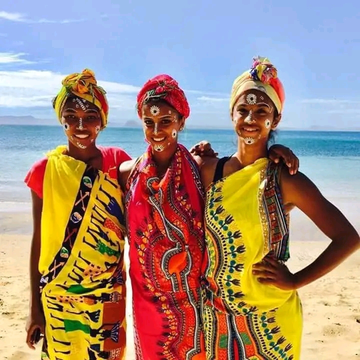
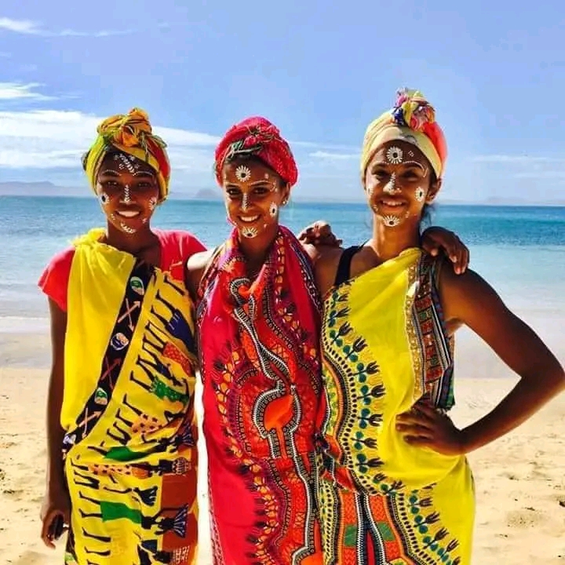
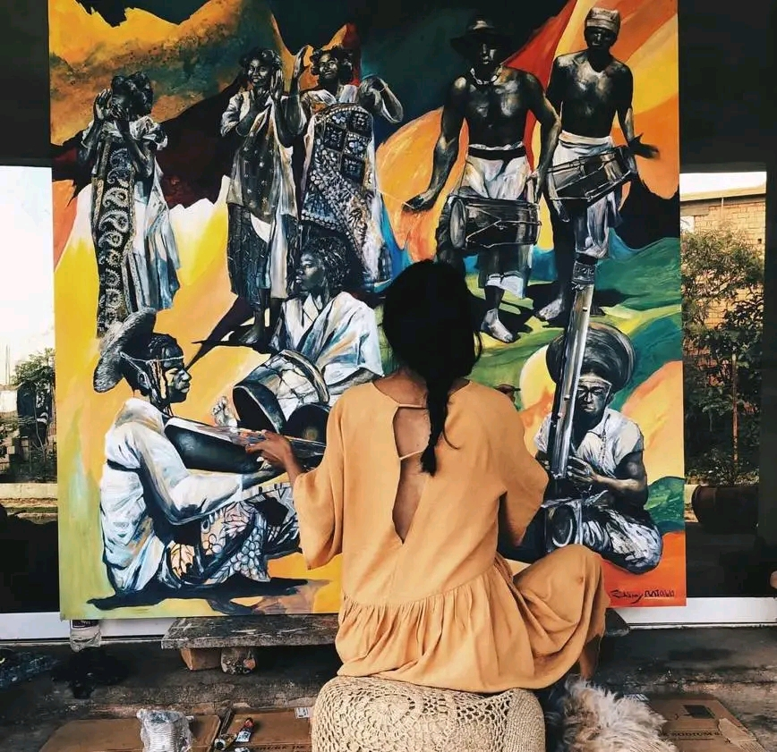
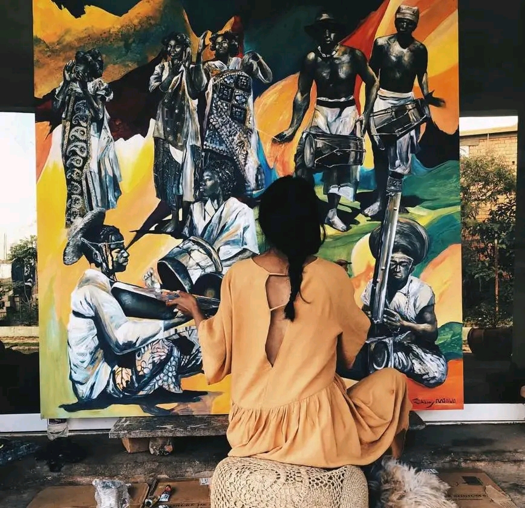
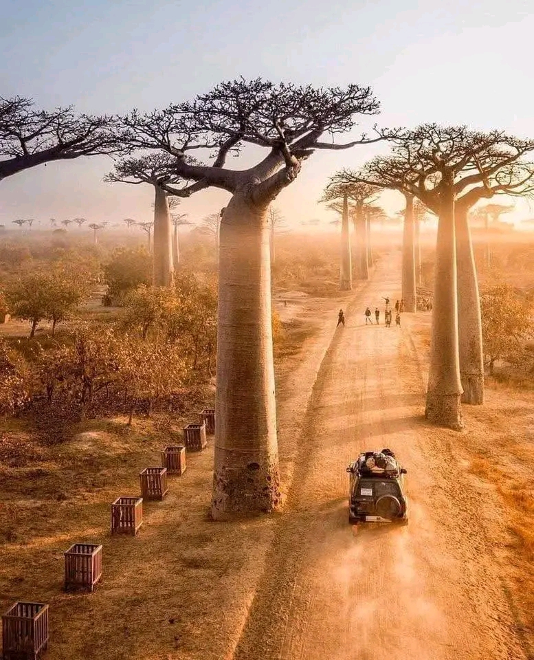
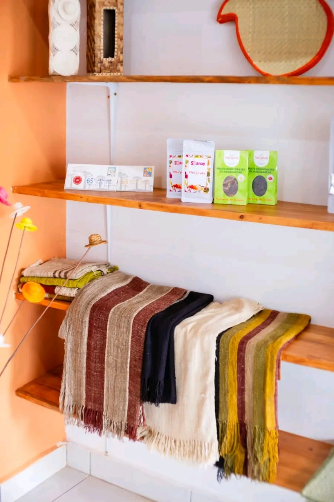
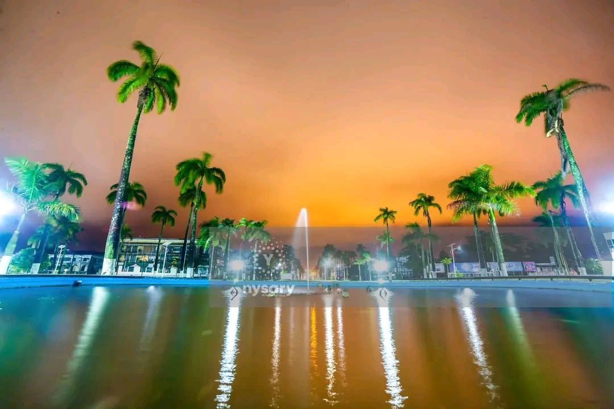
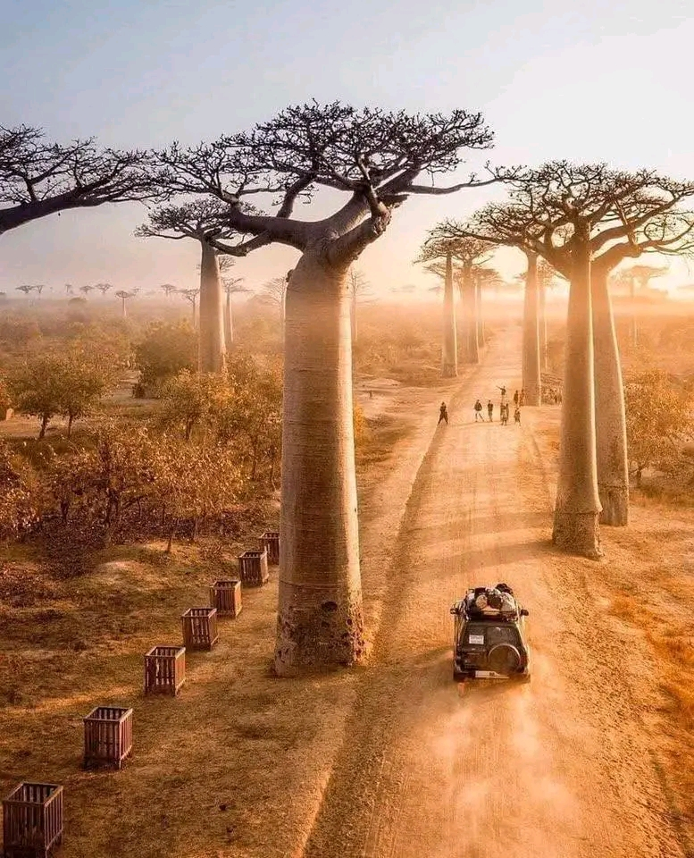
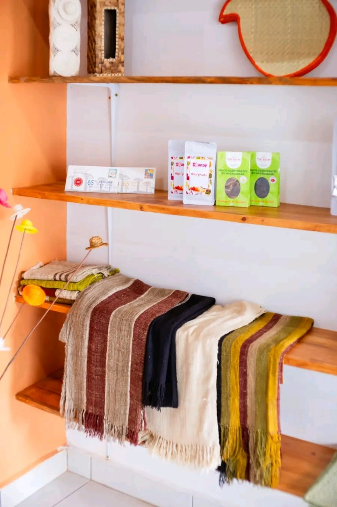
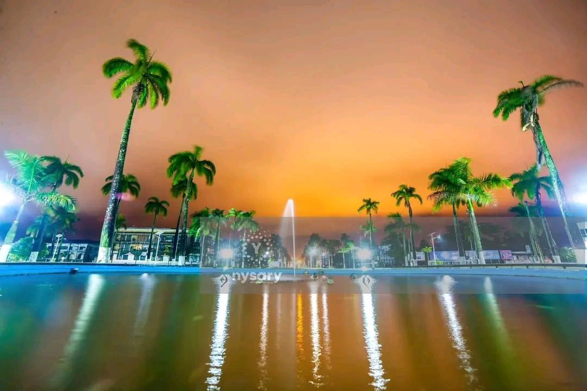

Population malgache : vue d’ensemble complète
Détails par thèmes et régions
La population de Madagascar est diverse, jeune et profondément liée à ses traditions tout en intégrant des influences modernes.
1️⃣ Nombre d’habitants et statistiques démographiques
Madagascar compte une population jeune et en croissance.
Population totale (2025) :
~31,8 millions-
Croissance annuelle :
~2,38 % Structure par âge :
- 0-14 ans : 38,86 %
- 15-24 ans : 20,06 %
- 25-54 ans : 33,02 %
- 55-64 ans : 4,6 %
- 65 ans et plus : 3,47 %
Espérance de vie :
~67 ans
La jeunesse de la population implique des besoins élevés en éducation, santé et emploi.
2️⃣ Répartition géographique
La majorité des Malgaches vit en zones rurales avec quelques grandes agglomérations urbaines.
Antananarivo (Plateau central) :
1,3 M ville, 3 M agglomérationToamasina (Côte est) :
485 000 habitantsAntsirabe (Centre) :
394 000 habitantsMahajanga (Ouest), Fianarantsoa (Sud), Toliara (Sud-ouest) :
100 000-200 000 habitantsRépartition :
65 % rurale, 35 % urbaine
Les zones rurales se concentrent sur l’agriculture, l’élevage et la pêche côtière.

3️⃣ Les 18 ethnies malgaches et leurs régions
Chaque ethnie a ses particularités culturelles, activités et dialecte.
| Ethnie | Région | Activités principales |
|---|---|---|
| Merina | Plateau central (Antananarivo, Antsirabe) | Riziculture, artisanat du bois, élevage |
| Betsileo | Fianarantsoa | Riziculture en terrasses, artisanat, danse traditionnelle |
| Betsimisaraka | Côte est (Tamatave, Mananjary) | Riziculture, pêche, vannerie |
| Sakalava | Côte ouest (Morondava, Majunga) | Élevage, artisanat, pêche |
| Antandroy | Sud (Toliara, Fort-Dauphin) | Pasteurs, riziculture, artisanat |
| Mahafaly | Sud-ouest (Toliara) | Pasteurs, art funéraire, artisanat |
| Vezo | Sud-ouest (Toliara, Morombe) | Pêche côtière, artisanat |
| Bara | Sud (Ihosy, Betroka) | Élevage, riziculture |
| Tanala | Est (Manakara, Vangaindrano) | Agriculture, chasse, artisanat |
| Sihanaka | Est (Lac Alaotra) | Pêche, riziculture |
| Tsimihety | Nord-ouest (Antsohihy, Ambilobe) | Agriculture, élevage |
| Antaisaka | Sud-est (Mananjary, Vangaindrano) | Agriculture, pêche |
| Antaimoro | Sud-est (Manakara, Farafangana) | Riziculture, artisanat, pêche |
| Antambahoaka | Sud-est (Mananjary) | Agriculture, pêche |
| Antanosy | Sud-est (Tolagnaro) | Riziculture, pêche |
| Antaifasy | Sud-est (Mananjary) | Agriculture, artisanat |
| Bezanozano | Est (Toamasina, Moramanga) | Agriculture, pêche, artisanat |
| Masikoro | Ouest (Morondava, Majunga) | Agriculture, artisanat, élevage |
Chaque ethnie a son dialecte, ses coutumes et son rôle historique dans la région.
4️⃣ Langues parlées
Malagasy :
langue nationale, dialectes selon les ethniesFrançais :
administration, éducation, héritage colonialAnglais :
enseigné dans certaines écoles et utilisé dans le tourisme
Les variations dialectales reflètent l’histoire des migrations austronésiennes et africaines.

5️⃣ Activités économiques
Agriculture :
riz, café, épices, fruits, légumes (80 % population active)Élevage :
zébus et petits troupeauxÉlevage :
artisanale, surtout côtière (Vezo, Betsimisaraka)Artisanat :
sculpture sur bois, vannerie, broderieIndustrie :
textile, agroalimentaire, minièreServices :
commerce, tourisme, télécommunications
L’économie rurale reste dominante, mais l’urbanisation crée de nouvelles opportunités.
6️⃣ Défis quotidiens
Pauvreté :
~80 % vivent avec < 2 $/jourAccès limité :
eau, électricité, soins de santéÉducation :
taux d’alphabétisation faible dans certaines régionsInfrastructures :
routes et transports insuffisantsEnvironnement :
déforestation, cyclones, sécheressesChômage :
élevé chez les jeunes diplômés
7️⃣ Vêtements traditionnels et modernes
Résumé des grands styles : Merina, Betsileo, Betsimisaraka, Sakalava, Antandroy/Mahafaly, Antaimoro, Antanosy/Antaisaka.


 

8️⃣ Religion
Christianisme :
85,3 %Islam :
3 %Religions traditionnelles :
4,5 %Sans affiliation :
6,9 %
9️⃣ Faits intéressants
Biodiversité :
5 % de la biodiversité mondialeLémuriens :
endémiques à l’îleBaobabs :
célèbres dans le MenabeCuisine :
riz de base, romazava, plats régionauxArtisanat :
vannerie, sculpture, broderieMusique et danse :
chaque ethnie a ses instruments et cérémonies

 


 




